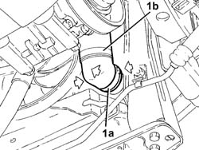
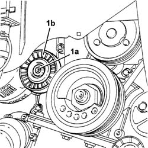
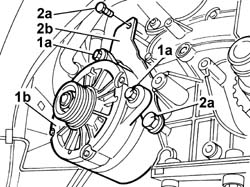
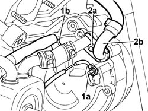
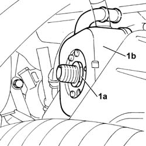
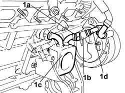

1088D68 Connectors on coolant circuit alternator - R.R. or replace gasket
- Path
- Procedures > 10 ENGINE > 1088 ENGINE COOLING > 1088D COOLANT HOSES AND PIPES > 1088D68 Connectors on coolant circuit alternator - R.R. or replace gasket
- Kind
- repair procedure (removal / refitting; the operation number is the code)
- Applies to
- engines: 3.0 V6, 3.2 V6; all production periods
- Interactive page
- https://sloeber94.github.io/elrnDB-lThss/en/#/192744
Applies to: engines: 3.0 V6, 3.2 V6; all production periods
 Removing
Removing
 Refitting
Refitting- Position the vehicle on a lift.
- Open the boot, remove the cover on the left hand side and disconnect the negative battery lead.
See in Op. 4450B04 Right FRONT WHEEL (one) - R.R.
See in Op. 7055B64 Engine compartment DUST SEAL in front wheel arch (one), left or right - R.R.
See in Op. 7055B42 FRONT WHEEL ARCH LINER (one), left or right - R.R.
See in Op. 7040D50 ENGINE COMPARTMENT UPPER SOUND INSULATION SHIELD - R.R.
See in Op. 1092G10 Engine components single drive BELT - R.R.
See in Op. 1048A21 AIR INLET HOSE FROM INTAKE TO FILTER - R.R.
See in Op. 1048A28 vacuum air circuit resonator pipe - r+r
See in Op. 1048A35 HOSE FROM FLOW METER TO RESONATOR - R.R.
See in Op. 1008C10 Power unit REACTION ROD - Replace
See in Op. 1048A11 COMPLETE AIR FILTER -R.R.
See in Op. 1072B50 Air CHAMBER - R.R.
- [2710A14]
See in Op. 1084B30 CARTRIDGE ENGINE OIL FILTER -R.R.
- [1080B84]
See in Op. 1080B39 RIGHT CATALYTIC PRECONVERTER - R.R. or Replace Gasket
- [1076B52]
- Raise the vehicle.
- Position a container to collect the radiator coolant.
1. Open the rapid attachment band (1a) and disconnect the lower pipe (1b) from the radiator (1c).

Applies to: engines: 3.0 V6, 3.2 V6; all production periods
1. Undo the fixing bolt (1a) and remove the services belt pulley (1b).

Applies to: engines: 3.0 V6, 3.2 V6; all production periods
1. Completely loosen the upper (1a) and lower bolts (1b) fixing the alternator (1c) to the mounting (1d).
2. Loosen the lower bolts (2a) and the upper bolts (2b) fixing the bracket (2c).

Applies to: engines: 3.0 V6, 3.2 V6; all production periods
1. Disconnect the electrical connection for the oil pressure sensor bulb.
2. Undo the oil pressure bulb and remove it.
Applies to: engines: 3.0 V6, 3.2 V6; all production periods
1. Undo the nuts fixing the alternator energizing (1a) and supply cables (1b).
- Position a container to collect the radiator coolant.
2. Undo the bolt (2a) fixing the water inlet/outlet pipes connector and disconnect the return pipe (2b) saving the seal.

Applies to: engines: 3.0 V6, 3.2 V6; all production periods
1. Undo the hexagonal nut (1a) located in the centre of the heat exchanger (1b) and move the heat exchanger as far to the side as is necessary to release the coolant inlet connector from the alternator, saving the seal.

Applies to: engines: 3.0 V6, 3.2 V6; all production periods
1. Open the band (1a) fixing the pipe (1b) between the heat exchanger (1c) and the connector (1d) and remove the connector.

Applies to: engines: 3.0 V6, 3.2 V6; all production periods
Refitting
Removing- Position the connector on the return pipe to the thermostat unit and close the fastening band.
- Position the connector on the pipe between the heat exchanger and the alternator and close the fastening band.
- Position the seal on the coolant inlet connector and fit it in the alternator housing.
- Position the engine oil heat exchanger and fit the connecting pipe on the crankcase.
- Tighten the filter feeder duct, then tighten the hexagonal nut to the recommended torque.
 | Value - daNm | Fastening | Component | Ø |
|---|---|---|---|---|
. | 3 | Connector | ENGINE OIL HEAT EXCHANGER | M18 X 1,5 |
- Position the coolant return connector, complete with seal, in the alternator housing and tighten the fixing bolt.
- Position the electrical connections for the alternator energizing and supply cables and tighten the fixing nuts.
 | Description | Connector |
|---|---|---|
. | Alternator | A010A |
| Value - daNm | Fastening | Component | Ø |
|---|---|---|---|---|
0.9 | Nut | ALTERNATOR | M8 |
| Value - daNm | Fastening | Component | Ø |
|---|---|---|---|---|
0.5 | Nut | ALTERNATOR | M8 |
| Description | Connector |
|---|---|---|
. | Alternator | A010B |
- Tighten the upper and lower bolts fixing the alternator to the mounting.
- Tighten the upper and lower bolts fixing the spacer bracket to the recommended torque.
| Value - daNm | Fastening | Component | Ø |
|---|---|---|---|---|
. | 0.6 | Bolt | ALTERNATOR BRACKETS | M6 |
- Tighten the oil pressure sensor bulb to the recommended torque.
| Value - daNm | Fastening | Component | Ø |
|---|---|---|---|---|
. | 2.4 | Connector | INSUFFICIENT ENGINE OIL PRESSURE SWITCH | M14X1,5 |
- Connect the electrical connection for the switch.
| Description | Connector |
|---|---|---|
Insufficient engine oil pressure sensor | K030 |
- Fit the single components drive belt fixed tensioner and secure it tightening the bolt to the recommended torque.
| Value - daNm | Fastening | Component | Ø |
|---|---|---|---|---|
. | 2.2 | Bolt | SINGLE BELT MOVING TENSIONER VARIOUS | M8 |
- Connect the lower radiator pipe.
- Lower the vehicle.
- [1076B52]
See in Op. 1080B39 RIGHT CATALYTIC PRECONVERTER - R.R. or Replace Gasket
- [1080B84]
See in Op. 1084B30 CARTRIDGE ENGINE OIL FILTER -R.R.
- [2710A14]
See in Op. 1072B50 Air CHAMBER - R.R.
See in Op. 1048A11 COMPLETE AIR FILTER -R.R.
See in Op. 1008C10 Power unit REACTION ROD - Replace
See in Op. 1048A35 HOSE FROM FLOW METER TO RESONATOR - R.R.
See in Op. 1048A28 vacuum air circuit resonator pipe - r+r
See in Op. 1048A21 AIR INLET HOSE FROM INTAKE TO FILTER - R.R.
See in Op. 1092G10 Engine components single drive BELT - R.R.
See in Op. 7040D50 ENGINE COMPARTMENT UPPER SOUND INSULATION SHIELD - R.R.
See in Op. 7055B42 FRONT WHEEL ARCH LINER (one), left or right - R.R.
See in Op. 7055B64 Engine compartment DUST SEAL in front wheel arch (one), left or right - R.R.
See in Op. 4450B04 Right FRONT WHEEL (one) - R.R.
- Connect the negative battery terminal.
See in Op. 0010T21 ENGINE COOLANT - Check density and top up if necessary
- Remove the vehicle from the lift.
Topics linked from this page (14)
- 0010T21 ENGINE COOLANT - Check density and top up if necessary
- 1008C10 Power unit REACTION ROD - Replace
- 1048A11 COMPLETE AIR FILTER -R.R.
- 1048A21 AIR INLET HOSE FROM INTAKE TO FILTER - R.R.
- 1048A28 vacuum air circuit resonator pipe - r+r
- 1048A35 HOSE FROM FLOW METER TO RESONATOR - R.R.
- 1072B50 Air CHAMBER - R.R.
- 1080B39 RIGHT CATALYTIC PRECONVERTER - R.R. or Replace Gasket
- 1084B30 CARTRIDGE ENGINE OIL FILTER -R.R.
- 1092G10 Engine components single drive BELT - R.R.
- 4450B04 Right FRONT WHEEL (one) - R.R.
- 7040D50 ENGINE COMPARTMENT UPPER SOUND INSULATION SHIELD - R.R.
- 7055B42 FRONT WHEEL ARCH LINER (one), left or right - R.R.
- 7055B64 Engine compartment DUST SEAL in front wheel arch (one), left or right - R.R.